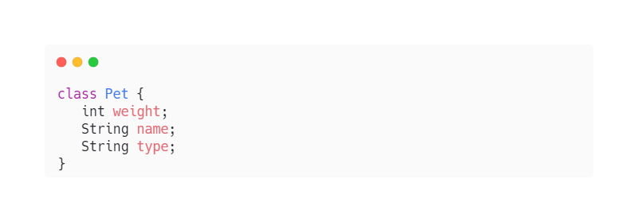

Классы в Java
Класс (Свойства, Структура)
Класс — это шаблонная конструкция, которая позволяет описать в программе объект, его свойства (атрибуты или поля класса) и поведение (методы класса).
Свойства Класса
Поле класса — это переменная, которая описывает какое-либо из свойств данного класса.
Например:

Переменные weight, name и type — поля нашего класса Pet, то есть свойства, которые описывают объект этого класса. Таких полей может быть сколько угодно, каждое имеет свой тип, как обычная переменная.
Мы уже пару раз упомянули словосочетание «объект класса». Так говорят, потому что любой объект является экземпляром какого-либо класса. Здесь действует простая аналогия: класс — это как бы чертёж, который описывает объект, его устройство, а объект — реализация чертежа, его материальное воплощение.
Pet pet;
Наш объект pet выглядит как обычная переменная, но в качестве типа указан класс Pet, и в данный момент в нём ничего нет. Инициализируем объект — воспользуемся такой синтаксической конструкцией:
Pet pet = new Pet();
Мы ставим знак равно, пишем ключевое слово new, имя нашего класса и круглые скобки. Принято говорить, что здесь мы вызываем конструктор класса Pet.
Теперь у нас появилась переменная pet типа Pet, в которой содержится объект класса Pet. Ранее в этом классе мы объявили поля, к которым можно обратиться и занести в них значения.
Чтобы получить доступ к какому-либо полю нашего класса Pet, нужно специальным образом обратиться к переменной pet — поставить точку и вызвать необходимое поле. Например, вот так:
 Теперь во всех трёх полях есть по значению, а мы можем получить их из программы, если потребуется, — например, распечатать в консоль:
Теперь во всех трёх полях есть по значению, а мы можем получить их из программы, если потребуется, — например, распечатать в консоль:
 Изменить значение в любом из полей класса также несложно. Пусть наш кот Барсик слегка потолстеет — добавим к его весу 1 кг:
Изменить значение в любом из полей класса также несложно. Пусть наш кот Барсик слегка потолстеет — добавим к его весу 1 кг:
 Как видим, мы просто изменили вес в поле weight, а при выводе получили уже другое значение.
Как видим, мы просто изменили вес в поле weight, а при выводе получили уже другое значение.
Методы класса
Метод класса — это блок кода, состоящий из ряда инструкций, который можно вызывать по его имени. Он обязательно содержит возвращаемый тип, название, аргументы и тело метода.
Теперь, когда мы разобрались, что такое методы, давайте создадим два метода — eat и run — в классе Pet.
Пусть первый из них принимает на вход параметр типа int и увеличивает на это значение поле weight (сколько скушал питомец, на столько и потолстел). А после этого печатает в консоль «Я поел» и возвращает новый вес.
Второй из методов run пусть уменьшает вес на 1, но только если он больше 5, и печатает в консоль: «Я бегу». Иначе, если вес меньше или равен 5: «Я не могу бежать».
 Теперь мы можем вызвать эти методы у объектов класса Pet. Чтобы это сделать, нужно обратиться к объекту, поставить точку и таким способом вызвать необходимый метод.
Теперь мы можем вызвать эти методы у объектов класса Pet. Чтобы это сделать, нужно обратиться к объекту, поставить точку и таким способом вызвать необходимый метод.
 Иногда в каком-то методе требуется создать параметр, у которого имя совпадает с именем поля класса. В таких случаях, чтобы обратиться внутри метода именно к полю класса, а не к параметру нашего метода, используется ключевое слово this.
Иногда в каком-то методе требуется создать параметр, у которого имя совпадает с именем поля класса. В таких случаях, чтобы обратиться внутри метода именно к полю класса, а не к параметру нашего метода, используется ключевое слово this.
Для иллюстрации этого создадим метод, setName, который будет устанавливать переданное значение в поле name, а затем сообщать в консоль, что нашего питомца теперь зовут по-другому.

Работать с классами и объектами в языке Java несложно, но есть несколько важных правил-примечаний, на которые нужно обратить внимание:
1. Классы создаются в файлах с расширением .java. Главный класс должен называться так же, как имя файла. Например, в файле Main.java — класс Main.
2. Разные классы в одном проекте могут иметь одинаковые имена, для этого им надо располагаться в разных пакетах (package).
3. Нельзя создать метод или объявить переменную за пределами классов.
4. Каждый раз мы начинаем программу со статического метода main, который имеет возвращаемый тип int, а в параметрах у него указана переменная args типа String[] (массив строк).